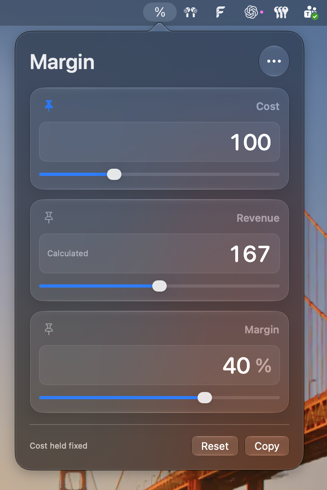

Two values in. One calculated.
Start with the numbers you know. Calculate cost, revenue, or margin without rearranging a formula.
A small utility for Mac
Enter cost, revenue, or gross margin.
Fill in any two and MarginMenu calculates the third.
Free. No signup required.
macOS 26 or later Apple silicon and Intel

Start with the numbers you know. Calculate cost, revenue, or margin without rearranging a formula.
Use the sliders to explore changes. Pin a value to keep it fixed while adjusting another.
See whole numbers at a glance. Existing values open for editing with up to two decimals. Copied results use up to two decimals too.
Signed and notarized for macOS.